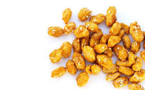

Candied peanuts

Description
These peanuts are best made as gifts, unless you plan on eating the whole darn recipe in one sitting, they're that good.
Ingredients
- 2 cups raw peanuts (skin on or off)
- 1 cup white sugar
- 1/3 cup water
- Salt and spices (Korean red pepper flakes, pumpkin spice, Ethiopian berbere...) to taste
Directions
- In a heavy cast iron skillet mix the peanuts, sugar and water
- Stir til the sugar gets sandy and dry.
- Lower the heat and keep cooking as the sugar eventually melts and turns to syrup.
- When the peanuts are brown (but before anything burns!) add a sprinkling of salt and the spices desired, and then dump peanut mixture out of the pan onto a baking sheet.
- Let the peanuts cool completely, break up clumps, and store in an airtight container. Keeps for up to one week.
Home